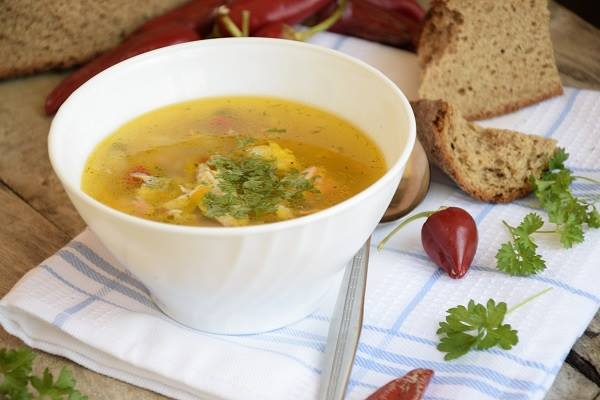

СУПИ

Рибена чорба
Ароматна супа от морска риба с подправки и кореноплодни.
0.450 л / 5.80 лв
Пилешка супа
Лека домашна пилешка супа със зеленчуци и фиде.
0.450 л / 5.20 лв
Шкембе чорба
Класическа шкембе чорба със сметана и чесън.
0.450 л / 5.60 лв
Таратор
Студена лятна супа с кисело мляко, краставици и копър.
0.450 л / 5.50 лв
АЛАМИНУТИ
Пилешки пурички с корнфлейкс
Хрупкави пилешки хапки в царевична панировка.
0.250 кг / 13.90 лв
Кашкавал пане
Пържен кашкавал в златиста коричка.
0.200 кг / 12.90 лв
Кашкавалени хапки
Апетитни кубчета кашкавал, панирани до съвършенство.
0.200 кг / 12.90 лв
Панирани сиренца
Нежни сиренца с хрупкава панировка.
0.250 кг / 13.90 лв
Панирани топени сиренца
Топени сиренца в златиста коричка.
0.250 кг / 13.90 лв
Миш-маш
Ястие от печени чушки, яйца и сирене.
0.400 кг / 12.90 лв
Пържени картофи
Класически пържени картофи със златист цвят.
0.200 кг / 7.50 лв
Пържени картофи със сирене
Картофи със солено бяло сирене отгоре.
0.250 кг / 8.50 лв